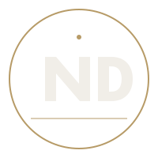

About the filmmaker 02 / 04
A life in
light & story.
Rwandan filmmaker, cinematographer, director and editor with a deep belief in the power of an honest frame.
The story behind the lens
I am Nziza
Heritier.
I’m a filmmaker, cinematographer, and editor from Rwanda, dedicated to creating powerful visual stories that connect with audiences beyond borders.
My work is driven by a simple belief: every story deserves to be seen, felt and remembered. From cinematic films and documentaries to branded content and visual productions, I combine storytelling, cinematography and post production to transform ideas into compelling experiences.

IMIRINGA
PRODUCTIONS
The studio
Built for stories
with meaning.
I am the founder and creative director of IMIRINGA PRODUCTIONS, a Rwanda based film production company focused on cinematography, film and documentary production, directing, editing, and creative visual storytelling.
Through IMIRINGA PRODUCTIONS, I collaborate with individuals, brands, organizations, and creative teams to bring meaningful stories from concept to screen.
What I bring
Direction
Finding the emotional core and giving every frame intention.
Cinematography
Light, movement and composition shaped into a visual language.
Editing
Rhythm and story assembled with precision in post-production.